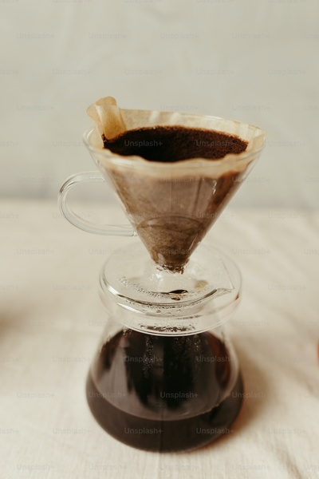
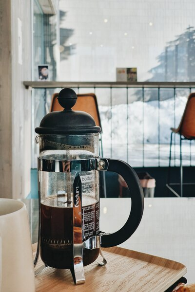
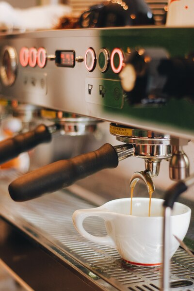

Drip Coffee Maker
Ingredients:
- Bag of your delicious Brazil Brew Co. coffee
- Clean, filtered water
Equipment:
- Drip coffee maker
- Coffee grinder (if using whole beans)
- Coffee filter
Measurements:
- Coffee Beans: Use a medium grind, equivalent to about 1 to 2 tablespoons of coffee per 6 ounces (180 ml) of water. The precise amount can vary based on your taste preferences, but this is a good starting point.
- Water: Measure the amount of water based on the number of cups you wish to brew. Typically, a standard coffee cup is about 6 ounces (180 ml), so adjust the water accordingly. Pour this amount into the water reservoir of your coffee maker.

French Press
Ingredients:
- Fresh Brazilian coffee beans
- Clean, filtered water
Equipment:
- French press
- Coffee grinder (if using whole beans)
- Timer
Measurements:
- Coffee Beans: Aim for a coarse grind, typically around 1 ounce (28 grams) of coffee per 15 ounces (450 ml) of water. This ratio can be adjusted to suit your taste.

Espresso Machine
Ingredients:
- Fresh Brazilian coffee beans
- Clean, filtered water
Equipment:
- Espresso machine
- Coffee grinder (if using whole beans)
- Espresso tamper
- Espresso shot glass or demitasse cup
Measurements:
- Coffee Beans: For a double shot of espresso, use about 18-20 grams of finely ground Brazilian coffee beans. Adjust the amount slightly to suit your taste.
